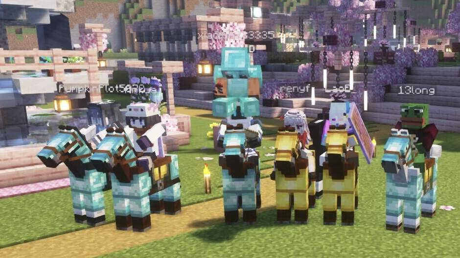
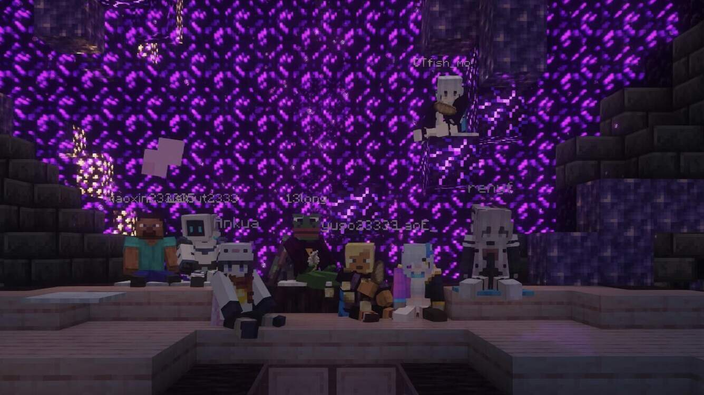
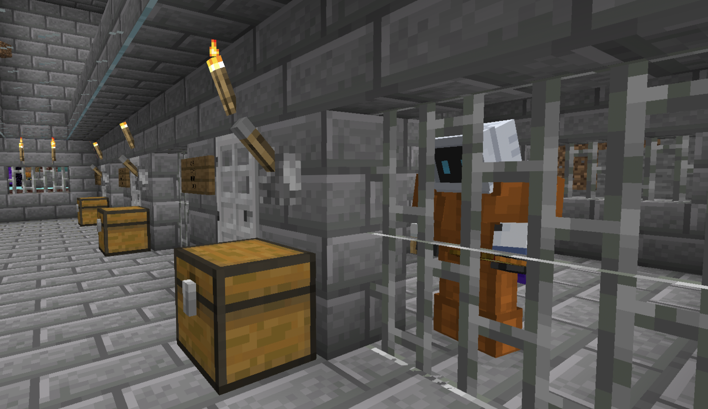

服务器介绍
本服务器非常适合喜欢小型服务器且倾向于休闲向的人。有别于那些大型多人服务器，如果你需要一份清闲之处，同时又想要有同好做伴，那么这里会非常适合你。且大部分情况下无正版验证，让任何人都可以轻松畅玩。


服务器基本要求
因为是非常轻量的服务器，所以管制宽松，我们没有严苛的服规，正常情况下不会有任何 OP 在线，但这并不意味着这会是一个无政府的混乱服务器，若是发现严重影响服内社区环境的恶劣行为，作案者将直接遭受顶格处理。与其救疗于有疾之后，不若摄养于无疾之先，作为一个非常自由的服务器，一般情况下不会有任何管制，所以底线也是为了维护最基本的风气，望理解。

相对的，这将会需要每一位玩家共同维护服内环境，群策群力，防微杜渐，远离犯罪。
开放中的服务器
使用对应版本进入；整合包在 QQ 群文件 → 游戏资源 内下载。
| 名称 | 版本 | 类型 | 地址 | 整合包 | 状态 |
|---|
白名单：进服前在群内召唤任意管理员上报游戏 ID，或按进服弹窗提示完成验证绑定。
服务器历史档案馆
一路走来的坑，感谢每一位同行的伙伴
展开已关闭的服务器
| 名称 | 版本 | 备注 | 地址（历史） |
|---|
新手指引
正版验证与白名单
- 正版验证：如果服务器开启正版验证，将无法使用离线账号进入。是否开启以服务器列表及群内公告为准。
- 白名单：进服前在群内召唤任意管理员上报游戏 ID，或按进服弹窗提示完成验证绑定。
- 服务器地址：见上方服务器表格，点地址旁的 ⧉ 按钮一键复制。
启动器选择
不推荐使用官方启动器 —— 真的不好用。推荐使用第三方启动器，主流选择很多，这里推荐 PCL2。新手建议先看一遍 PCL2 下载游戏资源、安装模组与整合包的使用教程再动手。
整合包安装（以 PCL2 为例）
- 在 QQ 群文件 → 游戏资源 找到整合包，点下载箭头开始下载。
- 进度条走完后，箭头会变成文件夹图标，点它找到下载好的文件。
- 打开 PCL2，把整合包文件直接拖进 PCL2 窗口即可。
其他启动器请自行搜索对应教程。
Java 版和基岩版有什么区别
- 开发与平台：基岩版用 C++ 开发，支持全平台跨平台联机；Java 版用 Java 开发，主要在电脑上运行（Windows / Mac / Linux 互通）。
- 怎么判断自己是哪个版本：游戏主菜单右下角有"衣柜"按钮的是基岩版，没有的是 Java 版。
- 互通：基岩版无法直接进入 Java 版服务器（除非服务器装了双端互通插件）。本站两个服务器均为 Java 版。
手机能玩吗
- 基岩版：可以直接进基岩服，不区分手机/电脑，但进不了 Java 服。
- Java 版：可以用 FCL 等手机启动器运行 Java 版进服（含部分模组服，前提是模组支持手机运行）。
文本和链接太多了，我不想看怎么办
欢迎加入
我们一直致力于营造一个协同互进，玩家通力合作的氛围，如果这种服务器对你胃口，千万不要错过。